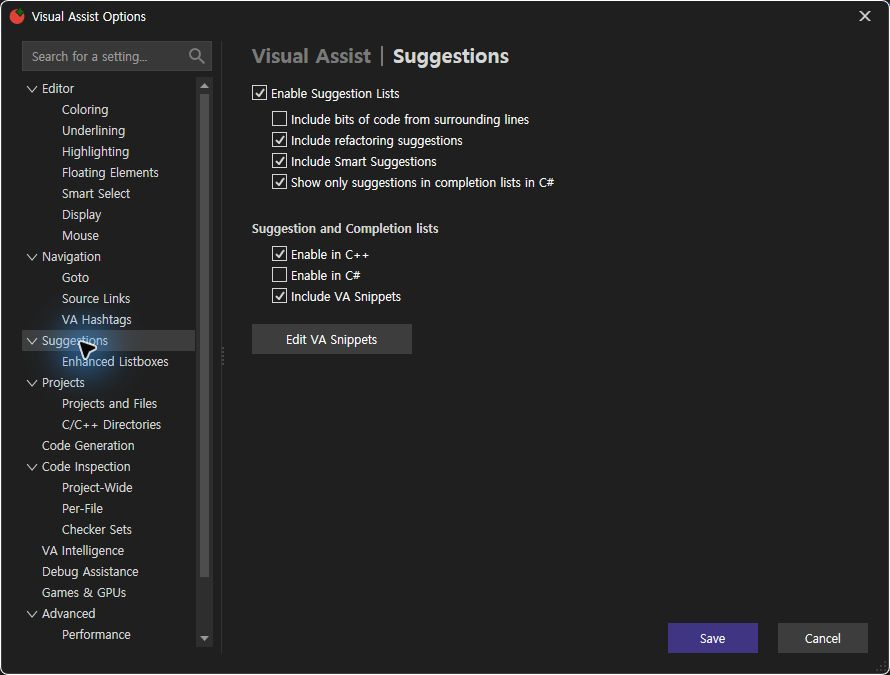
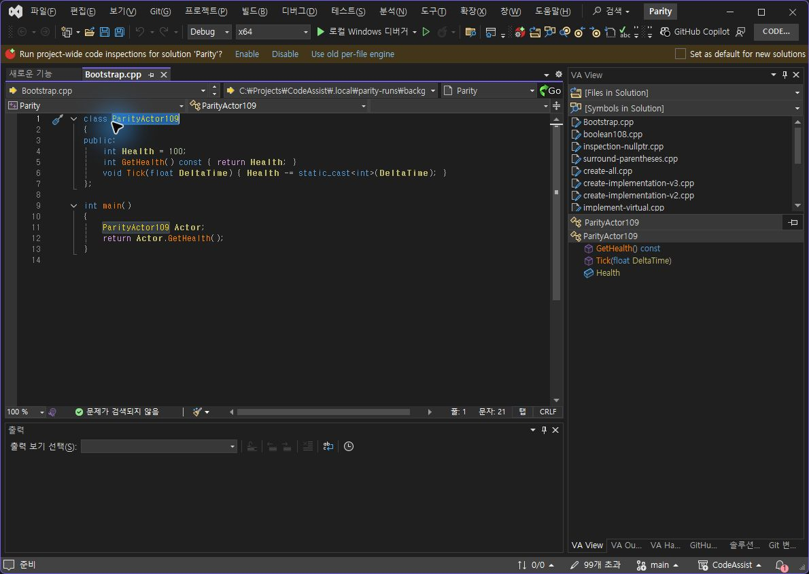
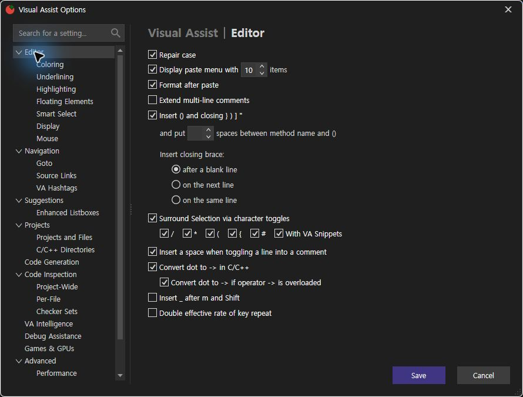
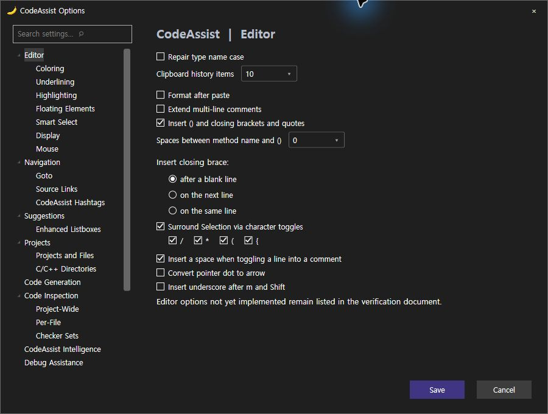
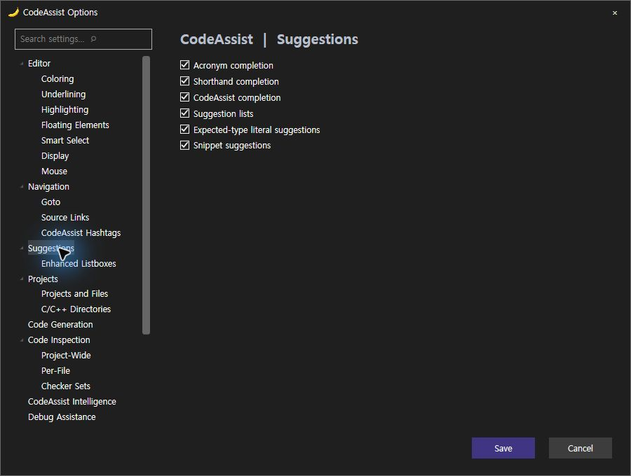

갱신 2026-10-23T01:26:51.255445+09:00


누락 항목은 불일치로 계산했습니다. 같은 틀과 일부 설정 배치를 맞췄다는 의미이며, 모든 옵션 동등성으로 해석하지 않습니다.
| 구조 기준 | 판정 |
|---|---|
| 외곽 크기890×675 | 일치 |
| 왼쪽 검색·트리 / 오른쪽 본문 배치 | 일치 |
| 상단 섹션 제목 위치·활성 제목 강조 | 일치 |
| Editor 기본 체크박스 순서 | 일치 |
| 클립보드 수 같은 줄 증감 입력 | 일치 |
| 메서드 괄호 공백 같은 줄 증감 입력 | 일치 |
| 닫는 괄호3개 라디오 그룹·들여쓰기 | 일치 |
| Suggestions 추천 그룹과 C++완성 그룹 분리 | 일치 |
| 하단 오른쪽 저장·취소 배치 | 일치 |
| 붙여넣기 메뉴 활성화 체크박스 | 차이 / 미구현 |
| 둘러싸기 # / 스니펫 항목 | 차이 / 미구현 |
| 연산자 오버로드 변환 하위 옵션 | 차이 / 미구현 |
| 키 반복 속도 옵션 | 차이 / 미구현 |
| Suggestions 전체 항목·스니펫 편집 버튼 | 차이 / 미구현 |
| 검사 | 결과 | 실행 증거 |
|---|---|---|
| 범위 밖 클립보드 수0 → Save 비활성 | 확인 | 관찰138 |
| 10으로 복원 → Save 활성 | 확인 | 관찰147 |
| 추천 목록 끄기 → Smart 하위 항목 비활성 | 확인 | 관찰149 |
| Escape 취소 → 옵션 닫힘 | 확인 | 관찰150 |
이번 구조·동작 원시 결과 · 실제 설치 확인 · 회귀 검사 · VA프로세스 충돌 이벤트
제안 시간10~15분. 시작2026-10-23 01:13:48 KST, 이번 기록 완료2026-10-23T01:26:51.255445+09:00. 전체 목표는 미완료입니다.
갱신 2026-10-23T01:13:21.621784+09:00
동일한 C++ 파일 SHA256 8a9d8ad69a16fb6813230be6b2db5a5717d5deb55b426b092465777af2884188를 사용했습니다. 행·문자 위치는 선택 후 안정된 상태에서 다시 관찰했습니다. VA와 CA의 실제 실행 결과만 대조했습니다.
| 항목 | VA 행:문자 | CA0.0.98 행:문자 | 판정 | 실행 근거 |
|---|---|---|---|---|
| GetHealth | 5:15 | 5:15 | 일치 | VA · CA |
| Tick | 6:11 | 6:11 | 일치 | VA · CA |
| ParityActor109 | 1:21 | 1:21 | 일치 | VA · CA |
| main | 9:9 | 9:9 | 일치 | VA · CA |
이전 CA0.0.97의 클래스 선택은 2행2열이었고, VA의 실제 선택은1행21열이었습니다. 0.0.98에서 식별자 끝으로 수정하고 재검증했습니다.





각 항목 동일 가중치1점, 위치·크기 허용8px. 전체 제품 점수로 사용하지 않습니다.
| 항목 | 판정 |
|---|---|
| Alt+M으로 작은 목록 열기 | 일치 |
| 왼쪽 탐색 막대 앵커: 기존 촬영 차이 6×3px | 일치 |
| 너비: VA 299px / CA 300px | 일치 |
| 높이: VA 74px / CA 82px, 허용 8px | 일치 |
| 클래스 포함 4개 항목 | 일치 |
| 표시 이름·서명·순서 4/4 | 일치 |
| 클래스/함수 아이콘 종류 | 일치 |
| 기본 글자색·선택 강조색 | 차이 |
| 접근성 이름에 실제 표시 이름 노출 | 일치 |




현재 회차에서 모든 조건을 인증한 기능은 0/108(0%)입니다. 이는 미구현률이 아니라 전체 조건 검증 완료 개수입니다. 한 목록의4개 이동 일치를108개 전체 일치율로 바꾸지 않습니다. 과거17/108 기록도 현재 버전 점수로 재사용하지 않습니다.
| ID | 기능 | 현재 회차 |
|---|---|---|
| VA-F001 | Find by Context | 현재 회차 실행 미완료 |
| VA-F002 | Find References | 현재 회차 실행 미완료 |
| VA-F003 | Find Symbol in Solution | 현재 회차 실행 미완료 |
| VA-F004 | GoTo Implementation | 현재 회차 실행 미완료 |
| VA-F005 | GoTo Member | 현재 회차 실행 미완료 |
| VA-F006 | GoTo Related | 현재 회차 실행 미완료 |
| VA-F007 | Highlight Current Line | 현재 회차 실행 미완료 |
| VA-F008 | List Methods in File | 부분 실행: 목록4항목 실제 탐색 일치; 전체 경계·설정 조건 미검증 |
| VA-F009 | Move Scope | 현재 회차 실행 미완료 |
| VA-F010 | Navigate Back and Forward | 현재 회차 실행 미완료 |
| VA-F011 | Open Corresponding File | 현재 회차 실행 미완료 |
| VA-F012 | Open File in Solution | 현재 회차 실행 미완료 |
| VA-F013 | VA Hashtags | 현재 회차 실행 미완료 |
| VA-F014 | VA Navigation Bar | 현재 회차 실행 미완료 |
| VA-F015 | Access to Refactoring Commands | 현재 회차 실행 미완료 |
| VA-F016 | Change Signature | 현재 회차 실행 미완료 |
| VA-F017 | Convert Between Pointer and Instance | 현재 회차 실행 미완료 |
| VA-F018 | Encapsulate Field | 현재 회차 실행 미완료 |
| VA-F019 | Extract Method | 현재 회차 실행 미완료 |
| VA-F020 | Introduce Variable | 현재 회차 실행 미완료 |
| VA-F021 | Move Implementation to Header File | 현재 회차 실행 미완료 |
| VA-F022 | Move Implementation to Source File | 현재 회차 실행 미완료 |
| VA-F023 | Move Method Implementations to Source File | 현재 회차 실행 미완료 |
| VA-F024 | Move Selection to New File | 현재 회차 실행 미완료 |
| VA-F025 | Rename | 현재 회차 실행 미완료 |
| VA-F026 | Rename Files | 현재 회차 실행 미완료 |
| VA-F027 | Simplify Instance Declaration | 현재 회차 실행 미완료 |
| VA-F028 | Add Forward Declaration | 현재 회차 실행 미완료 |
| VA-F029 | Add Member | 현재 회차 실행 미완료 |
| VA-F030 | Add Missing Case Statements | 현재 회차 실행 미완료 |
| VA-F031 | Add Similar Member | 현재 회차 실행 미완료 |
| VA-F032 | Add Using Directive | 현재 회차 실행 미완료 |
| VA-F033 | Add include Directive | 현재 회차 실행 미완료 |
| VA-F034 | Add/Remove Braces | 현재 회차 실행 미완료 |
| VA-F035 | Create Declaration | 현재 회차 실행 미완료 |
| VA-F036 | Create File | 현재 회차 실행 미완료 |
| VA-F037 | Create from Usage | 현재 회차 실행 미완료 |
| VA-F038 | Create Implementation | 현재 회차 실행 미완료 |
| VA-F039 | Create Method Implementations | 현재 회차 실행 미완료 |
| VA-F040 | Document Method | 현재 회차 실행 미완료 |
| VA-F041 | Implement Interface / Virtual Methods | 현재 회차 실행 미완료 |
| VA-F042 | Acronyms | 현재 회차 실행 미완료 |
| VA-F043 | Auto-Extend Multi-Line Comments | 현재 회차 실행 미완료 |
| VA-F044 | Enhanced Listboxes | 현재 회차 실행 미완료 |
| VA-F045 | Format After Paste | 현재 회차 실행 미완료 |
| VA-F046 | Insert () and Closing Brackets and Quotes | 현재 회차 실행 미완료 |
| VA-F047 | Insert _ After m and Shift | 현재 회차 실행 미완료 |
| VA-F048 | Multiple Clipboards | 현재 회차 실행 미완료 |
| VA-F049 | Reset Editor Zoom | 현재 회차 실행 미완료 |
| VA-F050 | Shorthand | 현재 회차 실행 미완료 |
| VA-F051 | Smart Select | 현재 회차 실행 미완료 |
| VA-F052 | Smart Suggestions | 현재 회차 실행 미완료 |
| VA-F053 | Sort Selected Lines | 현재 회차 실행 미완료 |
| VA-F054 | Suggestion Lists | 현재 회차 실행 미완료 |
| VA-F055 | Surround Selection | 현재 회차 실행 미완료 |
| VA-F056 | Surround With | 현재 회차 실행 미완료 |
| VA-F057 | Column Indicator | 현재 회차 실행 미완료 |
| VA-F058 | Context Field | 현재 회차 실행 미완료 |
| VA-F059 | Definition Field | 현재 회차 실행 미완료 |
| VA-F060 | Enhanced Syntax Coloring | 현재 회차 실행 미완료 |
| VA-F061 | Local Symbols in Bold | 현재 회차 실행 미완료 |
| VA-F062 | Highlight Find Results | 현재 회차 실행 미완료 |
| VA-F063 | Highlight Matching Words | 현재 회차 실행 미완료 |
| VA-F064 | Highlight References to Symbol Under Cursor | 현재 회차 실행 미완료 |
| VA-F065 | Parameter Info | 현재 회차 실행 미완료 |
| VA-F066 | Print in Color | 현재 회차 실행 미완료 |
| VA-F067 | Quick Info | 현재 회차 실행 미완료 |
| VA-F068 | System Symbols in Italics | 현재 회차 실행 미완료 |
| VA-F069 | Convert Dot to -> | 현재 회차 실행 미완료 |
| VA-F070 | Highlight Files in Output Window | 현재 회차 실행 미완료 |
| VA-F071 | Highlight Matching Braces and Parentheses | 현재 회차 실행 미완료 |
| VA-F072 | Highlight Mismatching Braces and Parentheses | 현재 회차 실행 미완료 |
| VA-F073 | Repair Case | 현재 회차 실행 미완료 |
| VA-F074 | Underline Spelling Errors | 현재 회차 실행 미완료 |
| VA-F075 | Underline Unknown Symbols | 현재 회차 실행 미완료 |
| VA-F076 | Code Inspection Settings | 현재 회차 실행 미완료 |
| VA-F077 | Code Issues in the Editor | 현재 회차 실행 미완료 |
| VA-F078 | Quick Fixes in the Editor | 현재 회차 실행 미완료 |
| VA-F079 | Quick Fixes in a Tool Window | 현재 회차 실행 미완료 |
| VA-F080 | VA Snippets | 현재 회차 실행 미완료 |
| VA-F081 | for Refactoring | 현재 회차 실행 미완료 |
| VA-F082 | for Smart Suggestions | 현재 회차 실행 미완료 |
| VA-F083 | for Surround With | 현재 회차 실행 미완료 |
| VA-F084 | with Shortcuts | 현재 회차 실행 미완료 |
| VA-F085 | Create from Selection | 현재 회차 실행 미완료 |
| VA-F086 | Environment Placeholders | 현재 회차 실행 미완료 |
| VA-F087 | Input Placeholders | 현재 회차 실행 미완료 |
| VA-F088 | Reserved Strings | 현재 회차 실행 미완료 |
| VA-F089 | Address Resolver | 현재 회차 실행 미완료 |
| VA-F090 | PDB Explorer | 현재 회차 실행 미완료 |
| VA-F091 | VA Memory View | 현재 회차 실행 미완료 |
| VA-F092 | VA Step Filter | 현재 회차 실행 미완료 |
| VA-F093 | VA Outline | 현재 회차 실행 미완료 |
| VA-F094 | VA View | 현재 회차 실행 미완료 |
| VA-F095 | Simple Link Patterns | 현재 회차 실행 미완료 |
| VA-F096 | Complex Link Patterns | 현재 회차 실행 미완료 |
| VA-F097 | Connect to FogBugz and GitHub | 현재 회차 실행 미완료 |
| VA-F098 | Preview Files | 현재 회차 실행 미완료 |
| VA-F099 | Open Hyperlinks in an External Browser | 현재 회차 실행 미완료 |
| VA-F100 | Custom Plug-ins | 현재 회차 실행 미완료 |
| VA-F101 | Context Menus | 현재 회차 실행 미완료 |
| VA-F102 | Custom File Extensions | 현재 회차 실행 미완료 |
| VA-F103 | Keyboard Shortcuts | 현재 회차 실행 미완료 |
| VA-F104 | Mouse | 현재 회차 실행 미완료 |
| VA-F105 | Multiple Platforms | 현재 회차 실행 미완료 |
| VA-F106 | Non-Microsoft Build Processes | 현재 회차 실행 미완료 |
| VA-F107 | Parse Concurrency | 현재 회차 실행 미완료 |
| VA-F108 | Options Dialog | 부분 관찰: Editor/Suggestions 구성 차이; 모든 페이지·저장 검증 필요 |
100%에 최대한 가까워질 때까지 반복 검증하는 지속 목표
기계 판독 결과 · 현재 설치 검증 · 현재 회귀 테스트 · 이전 비교 기록 · 원본 촬영 해시
사용 — DocumentMemberMenu 검색은 신규 파일을 누락하여 현재 파일 직접 읽기로 보완; 검색 결과를 실행 증거로 취급하지 않음
이번 재개 시작2026-10-23 01:00:16 KST. 최초 상태 점검 예상1분 이내였고, 보안 창 종료 확인 후 설치·실행 검증으로 이어졌습니다. 전체 목표는 미완료입니다. 이 기록의 갱신 시각은 위와 같습니다.